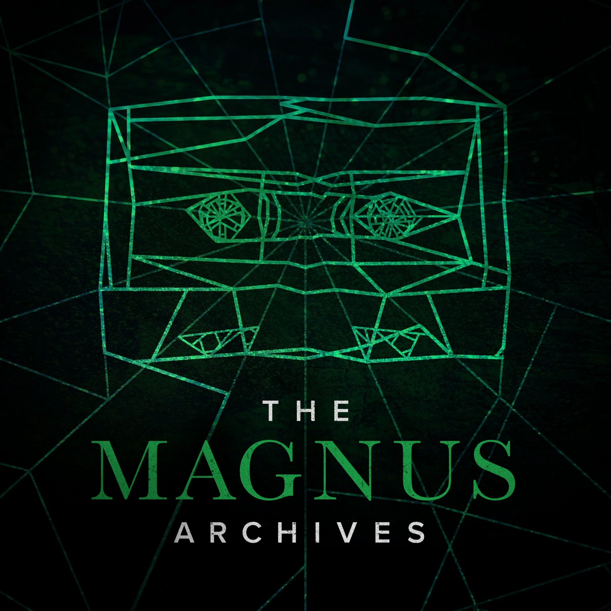

|
|
404 ERROR
|
|
Error message 3
[Message referencing Tessa Winters's VA, Fran Bushe]
🕸 a̤͇͗ͣn̥̘ͥ͆i̻̖̒͗k̦̞ͦ̑a̩̗͊̈ ̱̠̓̓k̫̰̇̚h̯̬ͧͪa͙̤͋̐n̥̻ͥ̋.͈̻ͩ́ ̃ h͔̜ͧ͑ǐ̙͚̆ ̰͇̹̝͆̇̉n̰̝ͨ̔i̥̪͂ͪc̱̰̋̔e͖ͫ̊ͅ ̝̺͒ͧa̹͖ͯ̔r̼̙̀͐t̟̩ͯ̐ ::::) 🕸
Error message 4
Error message 5
Error message 6
Error message 7
Error message 8
Error message 9
Error message 10
Error message 11
Error message 12
Error message 13
Error message 14
Error message 15
Error message 16
Error message 17
Error message 18
Error message 19
Error message 20
Error message 21
Error message 22
Error message 23
Error message 24
Error message 25